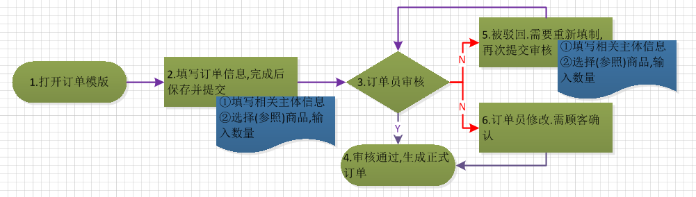

1.1 系统环境及登录
用户通过网上下单系统进行购买下单操作。
网上订单系统使用手册(暂行版本V1.0).docx ←点击鼠标右键，选择'将链接另存为'，下载Word版本。
网上订单系统使用手册(暂行版本V1.0).pdf ←点击鼠标右键，选择'将链接另存为'，点击下载Pdf版本。
1.2 系统使用环境
1.2.1 系统环境:运行此系统推荐平台
WindowsXP, Windows 7, Windows 8, Windows 10
1.2.2 使用环境,本程序使用浏览器登录使用:
IE8以上,FireFox(火狐),Chrome(谷歌),360,QQ等浏览器,推荐使用火狐浏览器
火狐浏览器下载(点我下载)
1.2.3 推荐使用1280*768以上的分辨率，为了获得最佳体验请使用1920*1080的分辨率。
1.2.4 网络带宽>1M
1.3 登陆系统
登陆地址：http://dl.duolian.com:1234
1.3.1 输入登陆用户名；
1.3.2 点击按钮获取手机短信验证码；(如长时间未获取,请联系客服人员)；
1.3.3 输入获取的短信验证码；
1.3.4 输入登陆密码；
1.3.5 点击登录按钮登陆网上下单系统；
2.1 流程及菜单
▶普通订单（含普通产品订单、样品资料订单）、参照酬宾订单、参照特殊订单

▶酬宾订单、特殊订单
2. 2 系统菜单

2.2.1 系统主页；
▶系统公告内容
2.2.2 普通订单
▶ 购物：用户购买商品下单。包括普通订单（含普通产品订单、样品资料订单）、参照酬宾订单、参照特殊订单。参照酬宾订单和参照特殊订单是根据顾客之前已经下过的酬宾订单和特殊订单参照其订单内容生成的订单，无法选取此类订单之外的商品。
▶ 待审核订单：购物订单提交后，可以查看哪些订单没有被审核，及时关注订单情况。
▶ 被驳回订单：被订单员驳回后，可以修正订单内容后再次提交订单给订单员审核。
▶ 待确认订单：订单员修改顾客提交的订单后，会发送给顾客，需要顾客进行确认后，生成正式订单。
▶ 历史订单：提交订单后，可以进行历史订单查询，显示订单相关信息，如审核状态、正式订单号等内容。
2.2.3 酬宾订单
▶ 在活动期间内可以使用该订单模版进行商品购买下订操作。注意：此订单是普通订单中'参照酬宾订单'的前置订单，此订单只做需求申请处理，非实际订单。
2.2.4特殊订单
▶ 特殊订单使用该模版进行商品购买下订操作。注意：此订单是普通订单中'参照特殊订单'的前置订单，此订单只做需求申请处理，非实际订单。
2.2.5 我的账户
▶ 个人信息：设置用户的联系方式（电话、QQ、邮箱）。
▶ 账户安全：设置密码、账户保护信息、安全邮箱等内容。
▶ 收货地址：维护顾客的收货地址信息；分为自提和配送。
2.2.6 报表
▶ 对账单：每月发送给顾客的对账信息清单，顾客对该账单进行确认。
3. 普通订单、样品资料订单
3.1 选择普通订单或者样品订单
3.2 普通订单、样品订单模版
3.3 填写订单模版表头信息，选择开票单位等信息。注意：样品订单，只需要选择关联正式订单号即可带出表头信息，不需要填写。
3.4 选择商品
▶3.4.1 刷新目录：此按钮功能是解决在选择商品分类的时候由于意外情况（网络延迟等）造成的界面卡住，点击后将刷新 5选择商品大类的选择界面。
▶3.4.2 确定：选择好商品之后点击 确定 提交。
▶3.4.3 取消：退出商品选择界面，返回订单界面。
▶3.4.4 清除所有选择项：清除所有已经选择的商品。
▶3.4.5 选择商品大类：商品的分类信息，点击选择后，右侧的（7.商品栏目）将显示该分类下的所有商品信息。
▶3.4.6 查询：该功能是对 7.商品栏目 中的所有商品进行筛选(名称和规格)。
▶3.4.7 商品信息
3.5 输入商品数量信息，并保存商品信息。
3.6 保存订单信息（提交订单），等待订单员审核。(可在待审核订单中查看)
4. 酬宾订单、特殊订单
★ 选择酬宾订单：当顾客在销售活动期间，因为库存不足或者其他原因无法建立普通订单、需要享受当前销售活动的优惠政策时，可使用该类型订单。该类型为需求预订单，不做实际订单处理，以后可使用‘普通订单’中的‘参照酬宾订单’来建立实际的购买订单并享受该活动的相关优惠政策。
★ 特殊订单：当顾客需要定制一些特殊商品时，可使用该类型订单。该类型为需求预订单，不做实际订单处理，以后可使用‘普通订单’中的‘参照特殊订单’来建立实际的购买订单。
4.1 选择酬宾订单、特殊订单
4.2 酬宾订单、特殊订单模版

4.3 填写订单模版表头信息，选择开票单位
4.4 选择商品
▶4.4.1 刷新目录：此按钮功能是解决在选择商品分类的时候由于意外情况（网络延迟等）造成的界面卡住，点击后将刷新 5选择商品大类的选择界面。
▶4.4.2 确定：选择好商品之后点击 确定 提交。
▶4.4.3 取消：退出商品选择界面，返回订单界面。
▶4.4.4 清除所有选择项：清除所有已经选择的商品。
▶4.4.5 选择商品大类：商品的分类信息，点击选择后，右侧的（7.商品栏目）将显示该分类下的所有商品信息。
▶4.4.6 查询：该功能是对 7.商品栏目 中的所有商品进行筛选(名称和规格)。
▶4.4.7 商品信息
4.5 输入商品数量信息，并保存商品信息。
4.6 保存订单信息（提交订单），等待订单员审核。(可在待审核订单中查看)
6. 其他操作
6.1 待审核订单
▶订单填制完毕提交后，使用此功能查询目前哪些订单正在被审核。点击刷新按钮，看到待审核订单信息汇总，点击蓝色网单号，可以在下方查看该订单的详细信息。

6.2 被驳回订单(订单员联系告知客户)
▶当顾客提交的订单被订单员驳回时，通过该功能，对被驳回的订单进行修正，并再次提交给订单员审核。
6.2.1 点击刷新，更新最新的驳回订单信息。
6.2.2 点击蓝色的网单号，会显示的订单详情信息，在详情信息下方，点击编辑订单按钮，进入修正界面。
6.2.3 通过左边的商品选择功能，对商品进行添加，或者在右边的订单模版中对订单信息进行修正以及商品进行删除，数量的修正。
6.2.4 保存商品信息。
6.2.5 提交订单（修改后提交审核）。
6.2.6 订单员审核。
6. 3 待确认订单
▶顾客提交订单之后,订单员在审核时修改了该订单的信息后，会返回给顾客，请顾客进行修改后的确认。点击‘确认’按钮后，会自动通过审核生成正式订单。
6.4 历史订单
▶该功能是查询所有的已经在系统中提交过的订单的详细信息。
7. 账户信息
7.1 地址设置
▶点击左侧导航的'我的账户'→'收货地址'
▶在右侧工作区域中维护收货地址信息。新增、编辑地址信息。
7.2 密码修改
▶点击主界面右上角的'修改密码'按钮
▶在弹出的密码修改对话框中，输入新密码，并点击'确定'按钮，完成密码修改操作。
8.对账单
▶顾客每月收到的账单，以及账单确认操作！
8.1 在左侧导航菜单中，选择‘报表’→‘对账单’，进入对账单界面。
8.2 在账单界面,输入查询条件，点击查询，在查询结果中点击‘查看账单’。
8.3 查看账单详情，并对账单进行确认。
▶ 如对账单信息没有问题，请及时确认，以免影响后续使用。